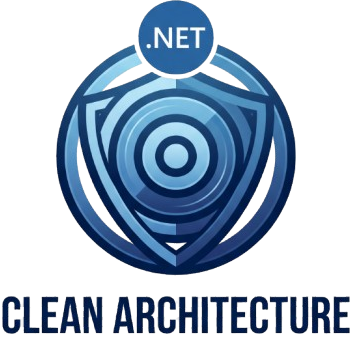

Engenharia, Segurança e Escalabilidade
Elielton, fundador da SyntaxCore, é um desenvolvedor com mais de 7 anos de experiência em gerenciamento de equipes de tecnologia e sistemas de alta complexidade em setores de Supply Chain e Saúde (Tasy e MV). Entrega soluções com integração total à LGPD e padrões seguros de código.
Nossos processos seguem rigores metodológicos da engenharia de software moderna, utilizando Clean Architecture. O cliente acompanha cada etapa via quadros Kanban em tempo real, garantindo transparência total.
Todas as aplicações são validadas pela Ethra, garantindo qualidade via testes de caixa preta e auditoria de segurança.
Consultoria arquitetural sem custos iniciais. Acordos realizados via contrato B2B para máxima segurança jurídica.
Agendar reunião com Elielton →
- • Mestrando em Computação (UFJ)
- • Especialista PMBOK & IA
- • Gestão de Ecossistemas Health